Introduction
Cognition is defined as the processes by which animals gather, preserve, and use information from their environment through perception, learning, memory, and decision making (Shettleworth 2010). These cognitive processes underpin several aspects of animals’ ecology such as foraging, mate choice, antipredatory strategies, and/or social behaviours, that are crucial for the survival and reproduction of animals (Dukas 2004). Particularly, learning - the acquisition of neuronal representations of new information (Dukas 2004) - is seen as fundamental for coping with environmental changes by enabling individuals to create new associations between events (Dukas 2004; Leal and Powell 2012; Buchanan et al. 2013). However, in nature, there is individual variation in the capacity to acquire new information, depending on factors like age, sex, gut microbiota, or the environment where organisms develop (Szuran et al. 1994; Lemaire et al. 2000; Zhu et al. 2004; Amiel and Shine 2012; Amiel et al. 2014; Carazo et al. 2014; Noble et al. 2014; Alemohammad et al. 2022). The latter can be particularly relevant since the brain is especially susceptible to environmental conditions during early stages of development (Zhu et al. 2004). Therefore, investigating the effects of the developmental environment on learning can be essential to understand how individual variation in learning is shaped, and, in consequence, to predict animals’ responses towards environmental change.
In this sense, prenatal Glucocorticoids (GCs) - hormones related to organisms’ response to stress (Sapolsky et al. 2000) - and prenatal thermal environment are known to influence learning abilities in different taxa (see Lemaire et al. 2000; Zhu et al. 2004; Amiel and Shine 2012; Crino et al. 2014a; Amiel et al. 2014; Abayarathna and Webb 2020). For instance, some studies have demonstrated that prenatal stress and high prenatal GC levels impair learning (Lemaire et al. 2000; Zhu et al. 2004; Farrell et al. 2015), while others showed diverse effects depending on factors like subjects’ sex or the nature of the learning task (Szuran et al. 1994; Crino et al. 2014b; Farrell et al. 2015; Bebus et al. 2016). Similarly, some experiments have shown significant impacts of prenatal temperature on learning in ectotherms (Amiel and Shine 2012; Amiel et al. 2014; Dayananda and Webb 2017; Abayarathna and Webb 2020). For example, high incubation temperatures have been linked with faster learning rates in skinks (Amiel and Shine 2012; Amiel et al. 2014), while velvet geckos incubated at temperatures over their natural range learn slower than those incubated within the natural thermal limits (Abayarathna and Webb 2020). In this vein, the effect of prenatal temperature appears to be linked to alterations in neural structure and metabolic activity (Coomber et al. 1997; Sakata et al. 2000; Amiel et al. 2017; Beltrán et al. 2021) that share some similarities with those resulting from prenatal increased stress or GC levels (Lemaire et al. 2000; Zhu et al. 2004; Du et al. 2009). This suggests that prenatal GCs and temperature can act on the same physiological mechanisms and, thus, both could interact to shape individual variation in learning abilities (Noble et al. 2018). Furthermore, GCs can play an pivotal role in determining vertebrate responses to elevated temperatures (Crino et al. 2023) potentially fostering natural interactions between temperature and GCs. However, despite the proximate similarities of prenatal GCs and temperature effects, and the potential role of GCs in vertebrates’ response to temperature, our understanding of how these two factors interact remains incomplete.
In this study, our objective is to explore the interactive effects between prenatal Glucocorticoids (GCs) and the prenatal thermal environment on learning. We utilized two species of skinks, the delicate skink (Lampropholis delicata) and the common garden skink (L. guichenoti), as model species. We experimentally increased Corticosterone (CORT) - the main GC in birds, reptiles, amphibians, and rodents (Crino et al. 2023) - levels in the eggs of these two species of skinks and then incubated them at two different temperatures in a 2X2 factorial design. Post-incubation, the juveniles were subjectd to a colour-associative task to assess their learning abilities. Our hypothesis posits that changes in CORT levels and temperature during early development will induce sustained effects on brain’s physiology that will ultimately impact learning skills. We predict that individuals exposed to high levels of CORT and/or low temperatures will perform less proficiently compared to control individuals or those exposed to high temperatures. Additionally, we anticipate that incubation at high temperatures will mitigate the impact of CORT on skink performance, while cold incubation temperatures are expected to enhance the detrimental effects of CORT on learning. Finally, we expect that the effects of the treatments will be similar in both species, as both species share similar life history traits and are closely related (Chapple et al. 2011, 2014), and other cognitive studies have not found any difference between species when tested in an associative learning task (Bezzina et al. 2014).
Methods
Subjects
L. guichenoti and L. delicata are small (∼35–55 mm snout-vent length (SVL)), oviparous, and generalist skinks that usually share the same habitat in suburban areas throughout south-eastern Australia (Chapple et al. 2011). Both species have similar breeding periods, but with some differences in reproductive output: while L. delicata lays 1 to 6 eggs in only one clutch per season, L. guichenoti clutches are smaller (1-5 eggs per clutch) but they usually lay two clutches per season (Chapple et al. 2011, 2014). Also, some sudies have found some behavioural divergence between the two skinks (Chapple et al. 2011). L. delicata is more exploratory and bolder than L. guichenoti (Chapple et al. 2011) which was related to the former’s success as an invassive species (Chapple et al. 2011; Bezzina et al. 2014), but not with their ability to learn in an associatve learning task (Bezzina et al. 2014).
Husbandry
Breeding colony – We tested juveniles coming from a breeding colony established in the lab since 2019. There is a total of 270 and 180 adults of L. delicata and L. guichenoti respectively, housed in big containers (41.5 L x 30.5 W x 21 H cm) with six lizards (2 males and 4 females) per enclosure. Enclosures are provided with non-stick matting, shelter, and several small water dishes. Water is given daily, and they are fed approx. 40 mid-size crickets (Acheta domestica) per enclosure three days a week. Crickets are dusted with calcium weekly and multivitamin and calcium biweekly. To ensure a temperature gradient, we employ a heat chord and a heat lamp following a 12 h light:12 h dark cycle. Room temperatures are set to 22-24 Celsius, and warm side of enclosures is usually at 32 Celsius.
Eggs collection and incubation – Between mid-October 2022 to the end of February 2023, we provided females with a place to lay the eggs by means of small boxes (12.5 L x 8.3 W x 5 H cm) with moist vermiculite inside, that were placed in one extreme of the communal enclosures (see above). We checked for the presence of eggs in the boxes three days a week. After collection, we measured length and width of eggs with a digital caliper to the nearest 0.1 mm and weight them with a (OHAUS, Model spx123) digital scale ± 0.001g error. Then eggs were treated with CORT or vehicle (see CORT and Temperature manipulation below) and were placed in individual cups (80 mL) with moist vermiculite (12 parts water to 4 parts vermiculite). The cups were covered with cling wrap to retain moisture and left in LATWIT 2X5D-R1160 incubators at two different temperatures (see CORT and Temperature manipulation below) until hatching.
Hatchlings – Eggs in the incubator were checked three times a week for hatchlings. After hatchling, we measured juveniles’ SVL and Tail Length (TL) with a rule to the nearest mm and weighted them with a (OHAUS, Model spx123) digital scale ± 0.001g error. We then placed hatchlings in individual enclosures (18.7L x 13.2W x 6.3H cm) and provided them with non-stick matting and a small water dish. During this period, they were sprayed water every day and received 3-6 small A. domestica crickets three times a week. All care otherwise follows similar protocols to adults (see above).
Two weeks before we started the training phase (see below), lizards were moved to the experimental arena for acclimatation. The arenas were individual medium size (41 L x 29.7 W x 22 H cm) plastic containers with a shelter (9 L x 6 W x 1.5 H cm) on one of the extremes and a water dish on the other. These new enclosures were placed in two rooms in 7 different racks associated to 7 different CCTV systems (device model DVR-HP210475) that allowed us to record their behaviour during the experiment (see details below). The number of lizards per species and treatment in each rack was counterbalanced to control for any effect of the room or the position of the lizard in the rack. During acclimatation and all the experiment, lizards were fed with only one cricket per day dusted with calcium and multivitamin (see protocol below), and water was supplied ad libitum. We provided a temperature gradient by means of a heat cord and heat lamps in a 12 h light: 12 h dark cycle. The rooms temperature was set to between 22-24 Celsius.
CORT and Temperature manipulation
To test empirically the effect of early environment we manipulated CORT concentration in eggs and incubated them under one of two temperature regimes (‘Cold’ – 23ºC ± 3ºC or ‘Hot’ – 30ºC ± 3ºC) in a 2x2 factorial design (Fig. 1 A). We first allocated eggs to one of two different treatments: CORT treatment, where eggs were topically supplied with 5µL of CORT dissolved in 70% Ethanol and 30% DMSO (vehicle) at a final (10 pg CORT/mL) concentration (CORT treatment); and a Control treatment, where eggs received an equal volume of the vehicle. CORT concentration employed in the CORT treatment represents 2 standard deviations above the mean natural concentration obtained in eggs from both species (non-published data). Then, eggs were incubated in one of the two previously mentioned temperature regimes (‘Cold’ or ‘Hot’) until hatching. The number of eggs per clutch assigned to each hormone and temperature treatment were counterbalanced in both species.
Learning
To estimate learning skills, we tested skinks’ ability to locate a food reward in a series of behavioural tasks (Fig. 1 B) (see Leal and Powell 2012; Clark et al. 2014). First, we performed a training phase where lizards had to learn to eat from white 3D-printed PLA ramps (9 L x 4 W x 5 H cm) identical to the ones from the experiment except for the colour (see below). We divided this training phase into three stages: in the first stage, lizards had to eat a small, frozen cricket (A. domestica) from an opaque petri dish (3D x 1.6H cm) placed in the middle of their enclosure (Fig. 1 B, Stage 1); in the second stage, the petri dish with the cricket was placed on top of the white 3D printed ramps (Fig. 1 B, Stage 2); and finally, the cricket was left inside a well (3D x 1.75H cm) on the top of the ramp in the third and last stage (Fig. Fig. 1 B, Stage 3). Every trial began when we left the feeding block (petri dish, ramp, or both) inside the enclosure and finished one hour later when we took it away. At the end of each trial, we recorded whether the cricket had been consumed or not. Trial was considered successful if the lizard could locate and consume the reward, while completion of each stage required the lizards to eat the crickets in at least 5 out of 6 trials. This phase lasted 38 days until all the lizards were able to eat from the ramp; only in one case we decided not to use the lizard because its behaviour was not consistent over the course of the training phase.
For the learning phase, we trained lizards to associate between colour and a food reward (‘Associative task’ in Fig. Fig. 1 B). The test was like the third stage of the training phase, but here lizards were presented with three feeders that differed in the colour. We placed the food reward (small, frozen, A. domestica crickets) inside the wells of the three feeders, covering two of the crickets with 3D-printed lids (3D x 0.5H cm) so prey was only accessible in “the correct” ramp. The food reward was placed in all three wells to avoid lizard using prey chemical cues, and the lids had a series of small holes on the top to allow the release of those chemicals. The colours of the feeders were green, red, and blue, as previous studies demonstrate that squamates can discriminate between these colours (Baden and Osorio 2019). To control for potential colour preference that could bias our results we split the subjects into two groups counterbalanced by treatment and species: in one group the correct choice (i.e., the ramp with the non-covered frozen cricket) was the blue one, while for the other group we assigned red as correct. In all trials, the position of the feeders was changed randomly to ensure subjects were using colour rather than spatial cues for the association. Lizards were tested in this task once a day for 35 days.
The full experiment was done daily between the 6th of March until the 17th of June 2023, between 11 to 12 am, when the lizards were active. Trials in the learning phase were recorded with CCTV systems always using the same camera per individual. Videos were analysed manually using a standard video player (IINA) by PR, who recorded whether the first choice made by each subject was the correct feeder or not. A choice was considered to be made if the head of the lizard was inside the well of one of the ramps. PR was blinded to the treatments of the lizards during the analyses of the video. We considered a trial failed if there was no choice in one hour of recording and those trials were considered as ‘non data’ in the analyses. We excluded from our analyses those individuals with more than 15 trials failed (i.e. they did not make a choice), and we considered the first trial to be the first one where the individual made a choice.
Statistical analyses
We performed the analyses with species (L. delicata or L. guichenoti) separately. We also saw a significant effect of the colour assigned in the preliminary analises, so we decided to split the data by colour (blue or red) as well. As such, we run a total of four different Bayesian multilevel models using the brm function from the brms package (Bürkner (2017)) in Quarto (Allaire et al. (2022)). Each model consisted of four parallel chains of 3000 iterations, with a warm up interval of 1000 iterations. ‘Choice’, i.e. whether the feeder visited first was the correct one (1) or not (0) was used as the response variable. The fixed effects of the model included a triple interaction between: ‘Trial’ as a nummeric variable, and hormone treatmet (‘CORT’ versus ‘Control’) and the temperature at which eggs were incubated (‘Cold’ versus ‘Hot’) as factors. For the random effects, we employed lizard identity as a random intercept, and as a random slope we included the ‘Trial’ within each level of lizard identity.
We used the resulting posterior of these models to evaluate learning differences between treatments within and between species and colour assigned. More specifically, we calculated learning slopes by using the estimates of the trial variable per each level of the hormone-temperature interaction (‘Treatments’); values bigger from zero were considered as evidence of learning, while those less or equal to zero not. We used the pmcmc method to test whether those slopes or the comparissons between treatments (e.g. slope for ‘CORT-Cold’ lizards minus ‘CORT-Hot’ lizards) were different from zero (two-tailed tests). We considered statistical significance if p-value < 0.05.
Results
Originally, we started with 96 lizards, 48 per species and 12 per treatment per species. However, due to natural mortality (n = 11), no completion of the training stage (n = 1), or no motivation during the learning tasks (n = 3), we ended up with a total of 81 lizards. Final sample sizes per treatment and species are disclosed on Table 1.
Specie | Group | Treatment | Mean | 95% CI | p-value |
|---|---|---|---|---|---|
L. delicata | Red | CORT-Cold (n = 5) | 0.100 | 0.055 , 0.147 | 0.000 |
Control-Cold (n = 6) | 0.056 | 0.017 , 0.096 | 0.006 | ||
CORT-Hot (n = 5) | 0.066 | 0.024 , 0.111 | 0.002 | ||
Control-Hot (n = 5) | 0.082 | 0.037 , 0.129 | 0.000 | ||
Blue | CORT-Cold (n = 6) | 0.011 | -0.037 , 0.059 | 0.620 | |
Control-Cold (n = 6) | -0.007 | -0.057 , 0.044 | 0.793 | ||
CORT-Hot (n = 6) | 0.032 | -0.016 , 0.08 | 0.178 | ||
Control-Hot (n = 5) | 0.053 | -0.001 , 0.107 | 0.054 | ||
L. guichenoti | Red | CORT-Cold (n = 5) | 0.120 | 0.056 , 0.192 | 0.000 |
Control-Cold (n = 4) | 0.097 | 0.026 , 0.17 | 0.008 | ||
CORT-Hot (n = 5) | 0.073 | 0.01 , 0.138 | 0.029 | ||
Control-Hot (n = 5) | 0.077 | 0.017 , 0.142 | 0.015 | ||
Blue | CORT-Cold (n = 5) | 0.069 | 0.013 , 0.129 | 0.020 | |
Control-Cold (n = 3) | 0.014 | -0.063 , 0.086 | 0.675 | ||
CORT-Hot (n = 5) | 0.099 | 0.036 , 0.172 | 0.005 | ||
Control-Hot (n = 5) | 0.064 | 0.004 , 0.124 | 0.039 |
Results of the are summarized in Table 1 and figures (Figdeli?), (Figguich?). On average, we found that the estimated learning slopes were lower when the blue feeders were the correct choice compared to those assigned to the group ‘Red’ for L. delicata (‘Blue’ learning slope - ‘Red’learning slope = -0.249, p = 0.001), but not for L. guichenoti (’Blue’ learning slope - ‘Red’learning slope = -0.168, p = 0.109). However, further analyses using the first trial indicated a potential bias towards blue in the initial choice (see Supplementary Material and Figs. (Figdeli?), (Figguich?)) that could be affecting the estimated slopes. As such, we analysed the between treatments differences for each group separately.
For those individuals assigned to group ’Red’, we did not find any significant differences between treatments neither for L. delicata (‘Control-Cold’ - ‘CORT-Cold’ = -0.044, p- value = 0.146; ‘Control-Hot’ - ‘CORT-Hot’ = 0.015, p- value = 0.626; ‘Control-Hot’ - ‘Control-Cold’ = 0.026, p-value = 0.398; ‘CORT-Hot’ - ‘CORT-Cold’ = -0.034, p-value = 0.29) (see (Figdeli?)), or L. guichenoti (‘Control-Cold’ - ‘CORT-Cold’ = -0.024, p- value = 0.619; ‘Control-Hot’ - ‘CORT-Hot’ = 0.004, p- value = 0.937; ‘Control-Hot’ - ‘Control-Cold’ = -0.02, p-value = 0.647; ‘CORT-Hot’ - ‘CORT-Cold’ = -0.047, p-value = 0.3) (see (Figguich?)). However, in both species the slope in the ‘CORTCold’ treatments seems bigger than the rest for group ‘Red’. When groups were pooled by incubation temperature, slopes from individuals incubated at 23ºC were on average bigger in both species, but the difference was not significant (L. delicata: ‘Hot’ learning slope - ‘Cold’ learning slope = -0.008, p-value = 0.842; L. guichenoti: ‘Hot’ learning slope - ‘Cold’ learning slope = -0.067, p-value = 0.294). CORT also lead to higher slopes in both species, but the differences were not significant (L. delicata: ‘Control’ learning slope - ‘CORT’ learning slope = -0.029, p-value = 0.514 ; L. guichenoti: ‘Control’ learning slope - ‘CORT’ learning slope = -0.02, p-value = 0.744). We also did not find any significant differences when we compared the estimated slopes between species (L. delicata - L. guichenoti = -0.062, p-value = 0.443).
The results for ‘Blue’ individuals were similar. We did not find significant differences between treatments in L.delicata (‘Control-Cold’ - ‘CORT-Cold’ = -0.018, p- value = 0.592; ‘Control-Hot’ - ‘CORT-Hot’ = 0.021, p- value = 0.561; ‘Control-Hot’ - ‘Control-Cold’ = 0.06, p-value = 0.107; ‘CORT-Hot’ - ‘CORT-Cold’ = 0.021, p-value = 0.516) (see (Figdeli?)), or L. guichenoti (‘Control-Cold’ - ‘CORT-Cold’ = -0.056, p- value = 0.222; ‘Control-Hot’ - ‘CORT-Hot’ = -0.035, p- value = 0.427; ‘Control-Hot’ - ‘Control-Cold’ = 0.05, p-value = 0.258; ‘CORT-Hot’ - ‘CORT-Cold’ = 0.03, p-value = 0.5) (see (Figguich?)). However, here the estimated slopes from those incubated at higher temperatures seem to be bigger on average, although the difference was not significant (L. delicata: ‘Hot’ learning slope - ‘Cold’ learning slope = 0.081, p-value = 0.109; L. guichenoti: ‘Hot’ learning slope - ‘Cold’ learning slope = 0.08, p-value = 0.194). Also, ‘Control’ L. delicata seem to have slightly higher estimated slopes than on average (‘Control’ learning slope - ‘CORT’ learning slope = 0.003, p-value = 0.961 ) while in L. guichenoti is the opposite (‘Control’ learning slope - ‘CORT’ learning slope = -0.091, p-value = 0.158); nevertheless, the differences found were not significant in any case. Finally, we found that learning slopes estimated for L. guichenoti assigned to group ‘Blue’ were marginally higher than those from L. delicata (L. delicata - L. guichenoti = -0.157, p-value = 0.056).
Discussion
References
Abayarathna T, Webb JK (2020) Effects of incubation temperatures on learning abilities of hatchling velvet geckos. Animal Cognition 23:613–620. https://doi.org/10.1007/s10071-020-01365-4
Alemohammad SMA, Noori SMR, Samarbafzadeh E, A. NSM (2022) The role of the gut microbiota and nutrition on spatial learning and spatial memory: A mini review based on animal studies. Molecular Biology Reports 1551–1563
Allaire JJ, Teague C, Scheidegger C, et al (2022) Quarto
Amiel JJ, Bao S, Shine R (2017) The effects of incubation temperature on the development of the cortical forebrain in a lizard. Animal Cognition 20:117–125. https://doi.org/10.1007/s10071-016-0993-2
Amiel JJ, Lindström T, Shine R (2014) Egg incubation effects generate positive correlations between size, speed and learning ability in young lizards. Animal Cognition 17:337–347. https://doi.org/10.1007/s10071-013-0665-4
Amiel JJ, Shine R (2012) Hotter nests produce smarter young lizards. Biology Letters 8:372–374. https://doi.org/10.1098/rsbl.2011.1161
Baden T, Osorio D (2019) The retinal basis of vertebrate color vision. Annual Review of Vision Science 177–200
Bebus SE, Small TW, Jones BC, et al (2016) Associative learning is inversely related to reversal learning and varies with nestling corticosterone exposure. Animal Behaviour 111:251–260. https://doi.org/10.1016/j.anbehav.2015.10.027
Beltrán I, Herculano-Houzel S, Sinervo B, Whiting MJ (2021) Are ectotherm brains vulnerable to global warming? Trends in Ecology & Evolution 36:691–699. https://doi.org/10.1016/j.tree.2021.04.009
Bezzina CN, Amiel JJ, Shine R (2014) Does invasion success reflect superior cognitive ability? A case study of two congeneric lizard species (lampropholis, scincidae). PLoS One 9:e86271
Buchanan KL, Grindstaff JL, Pravosudov VV (2013) Condition dependence, developmental plasticity, and cognition: Implications for ecology and evolution. Trends in Ecology & Evolution 28:290–296. https://doi.org/10.1016/j.tree.2013.02.004
Bürkner P-C (2017) Brms: An r package for bayesian multilevel models using stan. Journal of statistical software 80:1–28
Carazo P, Noble DWA, Chandrasoma D, Whiting MJ (2014) Sex and boldness explain individual differences in spatial learning in a lizard. Proceedings of the Royal Society B: Biological Sciences 281:20133275. https://doi.org/10.1098/rspb.2013.3275
Chapple DG, Miller KA, Chaplin K, et al (2014) Biology of the invasive delicate skink (Lampropholis delicata) on Lord Howe Island. Australian Journal of Zoology 62:498. https://doi.org/10.1071/ZO14098
Chapple DG, Simmonds SM, Wong BBM (2011) Know when to run, know when to hide: Can behavioral differences explain the divergent invasion success of two sympatric lizards?: Invasion Success of Two Sympatric Lizards. Ecology and Evolution 1:278–289. https://doi.org/10.1002/ece3.22
Clark BF, Amiel JJ, Shine R, et al (2014) Colour discrimination and associative learning in hatchling lizards incubated at “hot” and “cold” temperatures. Behavioral Ecology and Sociobiology 68:239–247. https://doi.org/10.1007/s00265-013-1639-x
Coomber P, Crews D, Gonzalez-Lima F (1997) Independent effects of incubation temperature and gonadal sex on the volume and metabolic capacity of brain nuclei in the leopard gecko (Eublepharis macularius), a lizard with temperature-dependent sex determination. The Journal of Comparative Neurology 380:409–421. https://doi.org/10.1002/(SICI)1096-9861(19970414)380:3<409::AID-CNE9>3.0.CO;2-6
Crino OL, Bonduriansky R, Martin LB, Noble DWA (2023) A conceptual framework for understanding stressinduced physiological and transgenerational effects on population responses to climate change. Evolution Letters
Crino OL, Driscoll SC, Breuner CW (2014a) Corticosterone exposure during development has sustained but not lifelong effects on body size and total and free corticosterone responses in the zebra finch. General and Comparative Endocrinology 196:123–129. https://doi.org/10.1016/j.ygcen.2013.10.006
Crino OL, Driscoll SC, Ton R, Breuner CW (2014b) Corticosterone exposure during development improves performance on a novel foraging task in zebra finches. Animal Behaviour 91:27–32. https://doi.org/10.1016/j.anbehav.2014.02.017
Dayananda B, Webb JK (2017) Incubation under climate warming affects learning ability and survival in hatchling lizards. Biology Letters 13:20170002. https://doi.org/10.1098/rsbl.2017.0002
Du J, Wang Y, Hunter R, et al (2009) Dynamic regulation of mitochondrial function by glucocorticoids. Proceedings of the National Academy of Sciences 106:3543–3548. https://doi.org/10.1073/pnas.0812671106
Dukas R (2004) Evolutionary Biology of Animal Cognition. Annual Review of Ecology, Evolution, and Systematics 35:347–374. https://doi.org/10.1146/annurev.ecolsys.35.112202.130152
Farrell TM, Neuert MAC, Cui A, MacDougall-Shackleton SA (2015) Developmental stress impairs a female songbird’s behavioural and neural response to a sexually selected signal. Animal Behaviour 102:157–167. https://doi.org/10.1016/j.anbehav.2015.01.018
Leal M, Powell BJ (2012) Behavioural flexibility and problem-solving in a tropical lizard. Biology Letters 8:28–30. https://doi.org/10.1098/rsbl.2011.0480
Lemaire V, Koehl M, Le Moal M, Abrous DN (2000) Prenatal stress produces learning deficits associated with an inhibition of neurogenesis in the hippocampus. Proceedings of the National Academy of Sciences 97:11032–11037. https://doi.org/10.1073/pnas.97.20.11032
Noble DWA, Byrne RW, Whiting MJ (2014) Age-dependent social learning in a lizard. Biology Letters 10:20140430. https://doi.org/10.1098/rsbl.2014.0430
Noble DWA, Stenhouse V, Schwanz LE (2018) Developmental temperatures and phenotypic plasticity in reptiles: A systematic review and meta-analysis: Incubation temperature and plasticity. Biological Reviews 93:72–97. https://doi.org/10.1111/brv.12333
Sakata JT, Coomber P, Gonzalez-Lima F, Crews D (2000) Functional connectivity among limbic brain areas: Differential effects of incubation temperature and gonadal sex in the leopard gecko, eublepharis macularius. Brain, Behavior and Evolution 139–151
Sapolsky RM, Romero LM, Munck AU (2000) How Do Glucocorticoids Influence Stress Responses? Integrating Permissive, Suppressive, Stimulatory, and Preparative Actions. 21:
Shettleworth SJ (2010) Cognition, evolution, and behaviour, 2nd edn. Oxford University Press
Szuran T, Zimmermann E, Welzl H (1994) Water maze performance and hippocampal weight of prenatally stressed rats. Behavioural Brain Research 65:153–155. https://doi.org/10.1016/0166-4328(94)90100-7
Zhu Z, Li X, Chen W, et al (2004) Prenatal stress causes gender-dependent neuronal loss and oxidative stress in rat hippocampus. Journal of Neuroscience Research 78:837–844. https://doi.org/10.1002/jnr.20338
Suplementary Material
Colour preference
To test if lizards were biased towards the assigned colour as our preliminary analyses suggested, we employed the intercepts from our posterior distributions. We first estimated the predicted probability of choosing the correct feeder first in the first trial, by using the formula: \[\text{Probability} = \frac{1}{1 + e^{-Intercept}}\]
Second, we tested the hypothesis that the estimated probability was higher than 0.33 (the probability expected by chance of choosing the correct feeder) using pmcmc. If the estimated probability is above 0.33. we consider it as an indication that there was a preference towards that colour that could be affecting learning slopes. The results per treatment are summarized in Table 2.
Specie | Treatment | Prob Blue | p-value Blue | Prob Red | p-value Red |
|---|---|---|---|---|---|
L. delicata | CORT-Cold | 0.645 | 0.004 | 0.143 | 0.981 |
Control-Cold | 0.756 | 0.000 | 0.297 | 0.660 | |
CORT-Hot | 0.545 | 0.032 | 0.335 | 0.515 | |
Control-Hot | 0.490 | 0.096 | 0.316 | 0.582 | |
L. guichenoti | CORT-Cold | 0.356 | 0.449 | 0.071 | 0.999 |
Control-Cold | 0.621 | 0.033 | 0.192 | 0.907 | |
CORT-Hot | 0.485 | 0.119 | 0.240 | 0.826 | |
Control-Hot | 0.501 | 0.086 | 0.286 | 0.683 |
On average, we found that, for both species, the proportion of correct choices in the first trial was significantly above chance when the correct feeder was blue (L. delicata: mean Prob choice = 0.609, p-value = 0; L. guichenoti: mean Prob choice = 0.491, p-value = 0.008), but not when it was red (L. delicata: mean Prob choice = 0.273, p-value = 0.871; L. guichenoti: mean Prob choice = 0.273, p-value = 0.871).
Checking the models plots
Model formula for task is:
Choice ~ Trialcorttemp + (1 + Trial|lizard_id)
Plots for the different models of the associative task:
1.- L. delicata
1.a.- Red
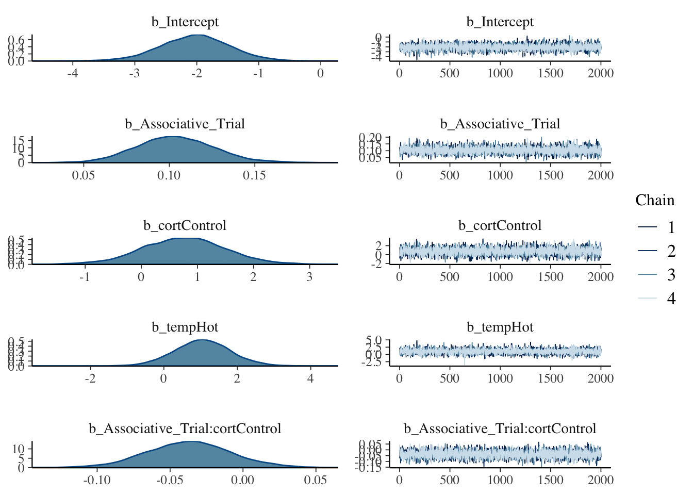
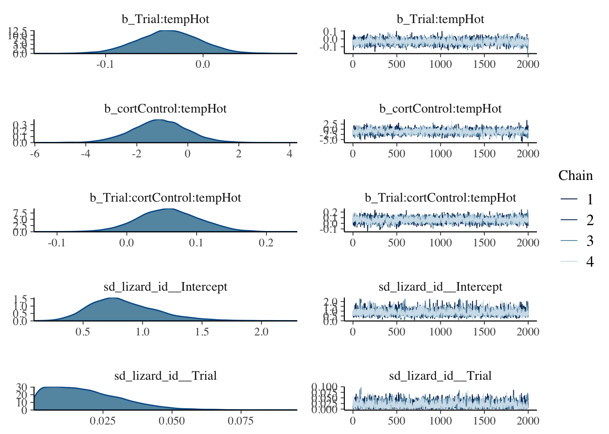
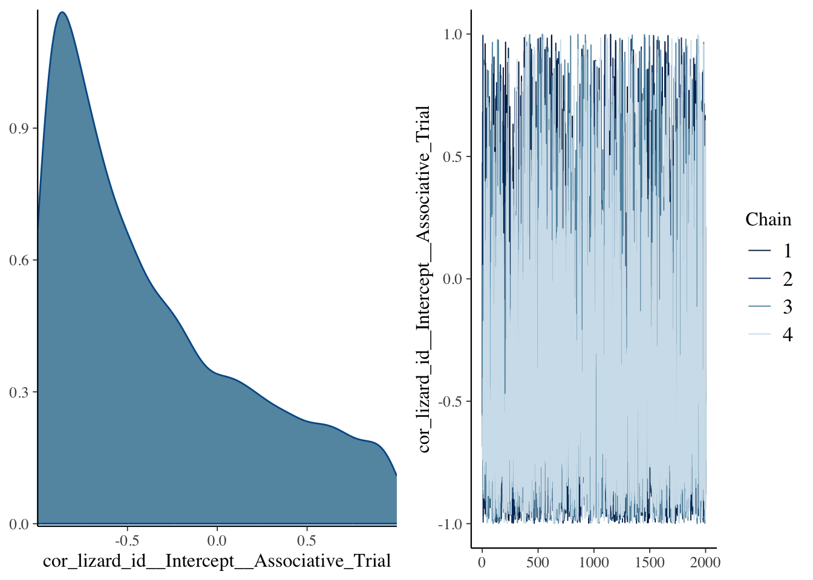
1.b.- Blue
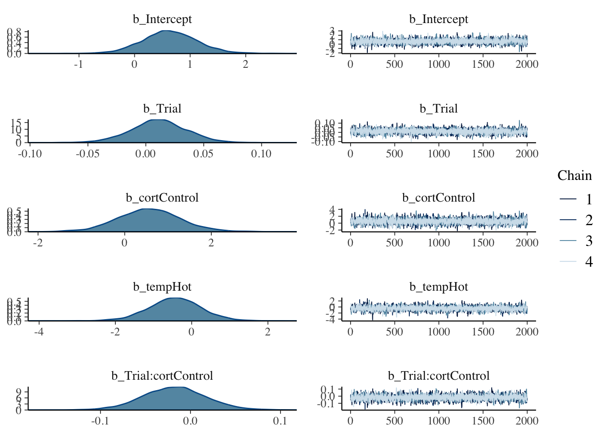
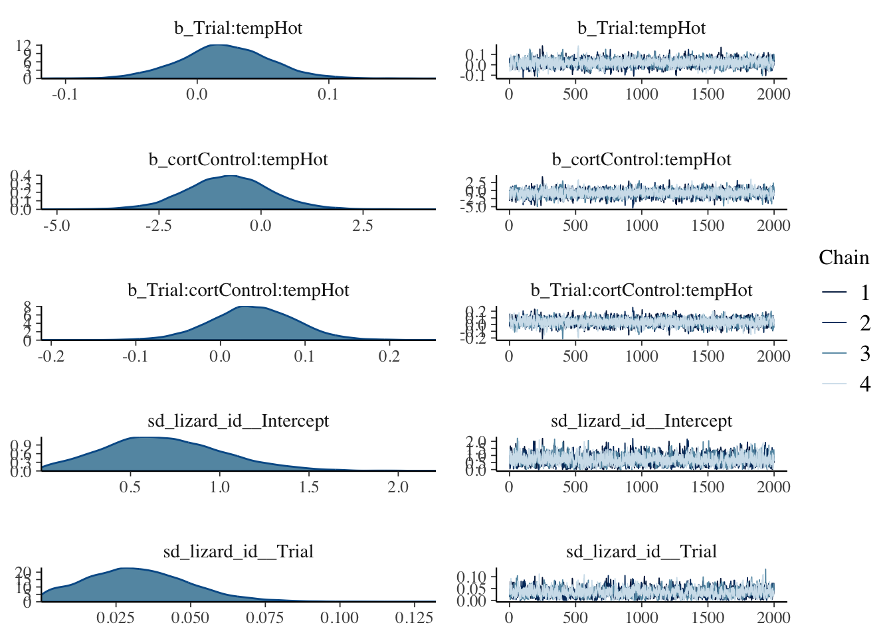
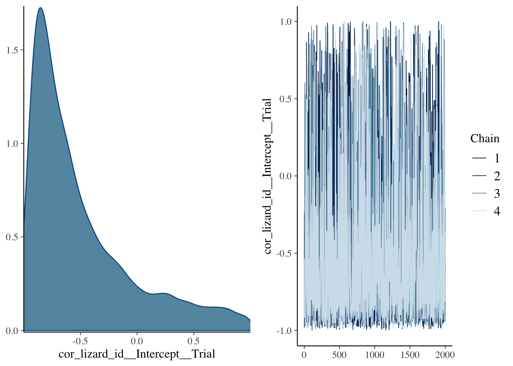
2.- L. guichenoti
2.a.- Red

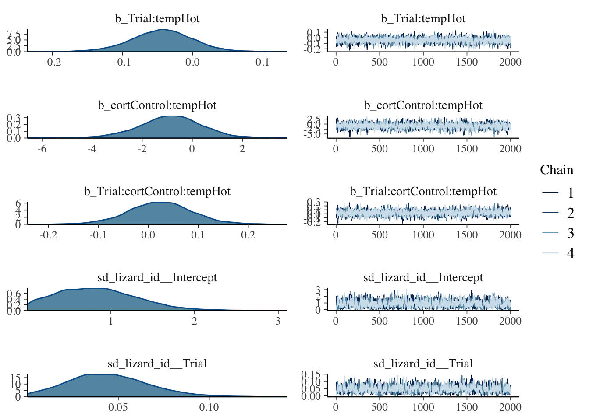
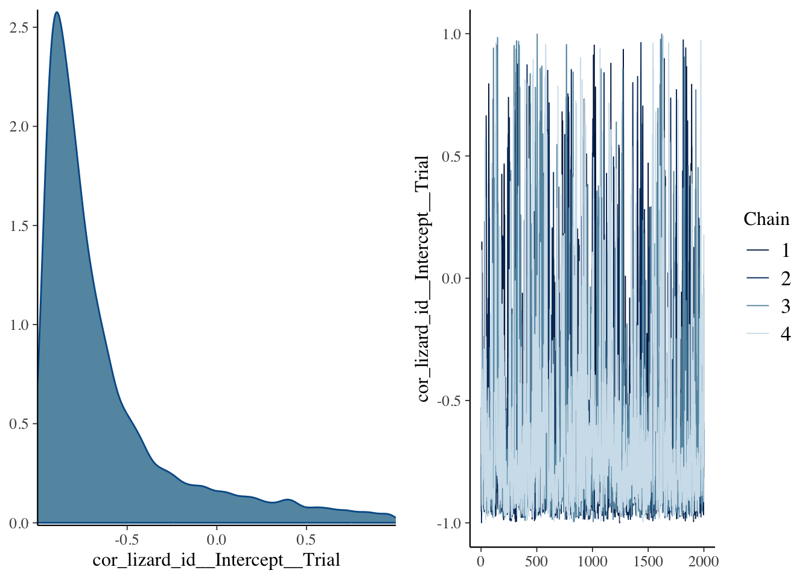
2.b.- Blue
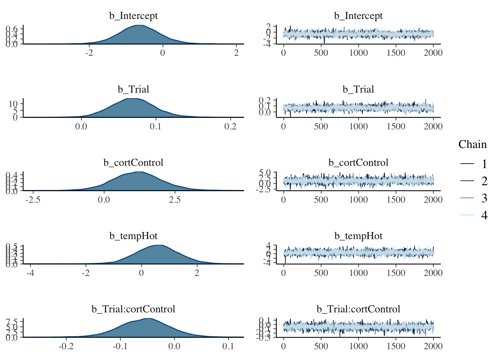
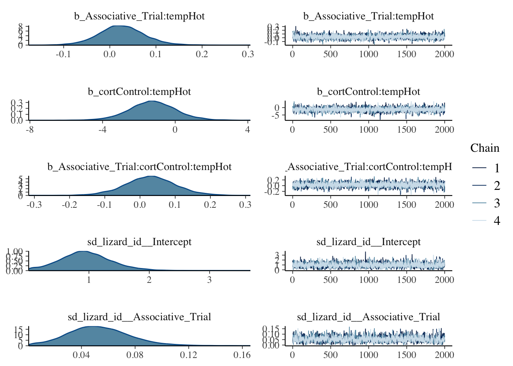
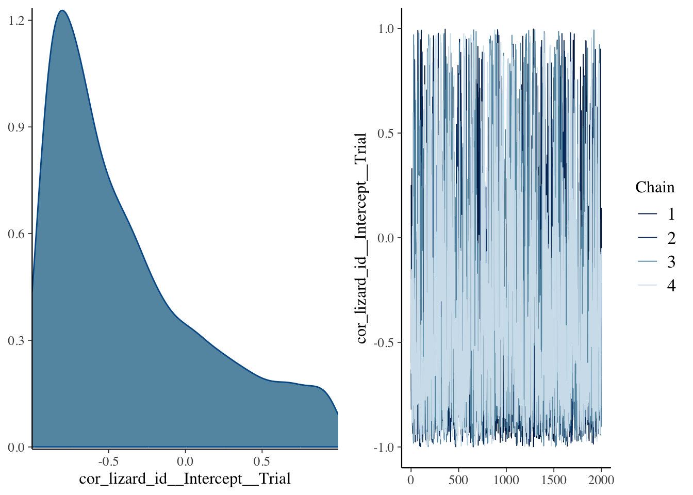